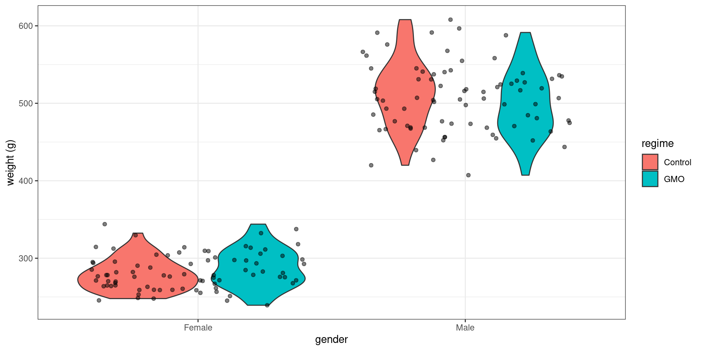
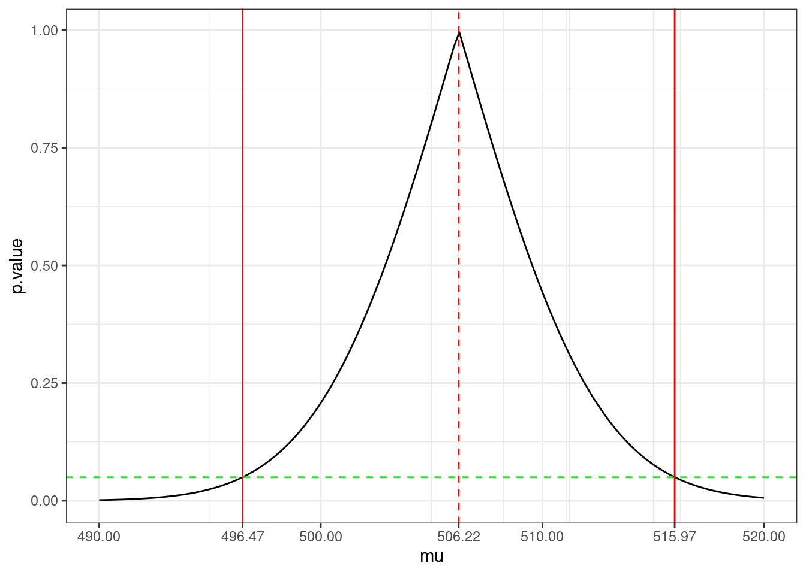

library(tidyverse)
library(ggfortify) # extend some ggplot2 features
library(pwr) # power study in R
theme_set(theme_bw())Statistical Tests
Lecture Notes
Preliminary
Only functions from R-base and stats (preloaded) are required plus packages from the tidyverse for data representation and manipulation.
1 Introduction
A feeding study served to authorize the MON863 maize, a genetically modified organism (GMO) developed by the Monsanto company, by the European and American authorities. It included male and female rats. For each sex, one group was fed with GMOs in the equilibrated diet, and one with the closest control regimen without GMOs.
We are interested in the weight of the rats after a period of 14 weeks.
rat_weight <- read_csv("../../data/ratWeight.csv") %>% filter(week == 14) %>% select(-week)Rows: 2235 Columns: 6
── Column specification ────────────────────────────────────────────────────────
Delimiter: ","
chr (4): id, regime, gender, dosage
dbl (2): week, weight
ℹ Use `spec()` to retrieve the full column specification for this data.
ℹ Specify the column types or set `show_col_types = FALSE` to quiet this message.rat_weight %>% rmarkdown::paged_table()The data per gender and regime is displayed below
Show the code
rat_weight %>%
ggplot() + aes(x = gender, y = weight) +
geom_violin(aes(fill = regime)) + geom_jitter(alpha = 0.5) + ylab("weight (g)")
The following table provides the mean weight in each group
Show the code
rat_weight %>% group_by(regime, gender) %>%
summarise('average weight' = mean(weight), count = n()) %>%
rmarkdown::paged_table()Our main objective is to detect some possible effect of the diet on the weight. More precisely, we would like to know if the differences observed in the data are due to random fluctuations in sampling or to differences in diet.
2 Student’s t-test
2.1 One sample t-test
Before considering the problem of comparing two groups, let us start looking at the weight of the male rats only:
Show the code
rat_weight %>% filter(gender == "Male") %>%
ggplot() + aes(x = regime, y = weight) +
geom_violin(aes(fill = regime)) + geom_jitter(alpha = 0.5) + ylab("weight (g)")
Let x_1, x_2, x_n the weights of the n male rats. We will assume that the x_i’s are independent and normally distributed with mean \mu and variance \sigma^2:
x_i \sim^{\mathrm{iid}} \mathcal{N}(\mu \ , \ \sigma^2)
2.1.1 One sided test
We want to test
H_0: \ ``\mu \leq \mu_0" \quad \text{versus} \quad H_1: \ ``\mu > \mu_0"
Function t.test can be used for performing this test:
x <- rat_weight %>% filter(gender == "Male") %>% pull("weight")
mu0 <- 500
t.test(x, alternative="greater", mu=mu0)
One Sample t-test
data: x
t = 1.2708, df = 77, p-value = 0.1038
alternative hypothesis: true mean is greater than 500
95 percent confidence interval:
498.0706 Inf
sample estimates:
mean of x
506.2218 Let us see what these outputs are and how they are computed.
Let \bar{x} = n^{-1}\sum_{i=1}^n x_i be the empirical mean of the data. \bar{x} \sim \mathcal{N}(\mu \ , \ \frac{\sigma^2}{n}) Then, \begin{aligned} \frac{\sqrt{n}(\bar{x} - \mu)}{\sigma} \ & \sim \ \mathcal{N}(0 \ , \ 1) \\ \frac{\sqrt{n}(\bar{x} - \mu)}{s} \ & \sim \ t_{n-1} \end{aligned}
where s^2 = \frac{1}{n-1}\sum_{i=1}^n (x_i - \bar{x})^2 is the empirical variance of the x_i’s.
The statistic used for the test should be a function of the data whose distribution under H_0 is known, and whose expected behavior under H_1 allows one to define a rejection region (or critical region) for the null hypothesis.
Here, the test statistic is T_{\rm stat} = \frac{(\bar{x} - \mu_0)}{s/\sqrt{n}} which follows a t-distribution with n-1 degrees of freedom when \mu=\mu_0.
\bar{x} is expected to be less than or equal to \mu_0 under the null hypothesis, and greater than \mu_0 under the alternative hypothesis, Hence, T_{\rm stat} is expected to be less than or equal to 0 under H_0 and greater than 0 under H_1. We then reject the null hypothesis H_0 if T_{\rm stat} is greater than some threshold q.
Such decision rule may lead to two kinds of error:
- The type I error is the incorrect rejection of null hypothesis when it is true,
- The type II error is the failure to reject the null hypothesis when it is false.
The type I error rate or significance level is therefore the probability of rejecting the null hypothesis given that it is true.
In our case, for a given significance level \alpha, we will reject H_0 if T_{\rm stat} > qt_{1-\alpha,n-1}, where qt_{1-\alpha,n-1} is the quantile of order 1-\alpha for a t-distribution with n-1 degrees of freedom.
Indeed, by definition,
\begin{aligned} \mathbb{P}(\text{reject } H_0 \ | \ H_0 \ \text{true}) &= \mathbb{P}(T_{\rm stat} > qt_{1-\alpha,n-1} \ | \ \mu \leq \mu_0) \\ & \leq \mathbb{P}(T_{\rm stat} > qt_{1-\alpha,n-1} \ | \ \mu = \mu_0) \\ & \leq \mathbb{P}(t_{n-1} > qt_{1-\alpha,n-1}) \\ & \leq \alpha \end{aligned}
alpha <- 0.05
x_mean <- mean(x)
x_sd <- sd(x)
n <- length(x)
df <- n - 1
t.stat <- sqrt(n)*(x_mean-mu0)/x_sd
c(t.stat,qt(1-alpha, df))[1] 1.270806 1.664885We therefore don’t reject H_0 in our example since T_{\rm stat} < qt_{1-\alpha,n-1}.
We can equivalently compute the significance level for which the test becomes significant. This value is called the p-value: \begin{aligned} p_{\rm value} & = \max\mathbb{P}_{H_0}(T_{\rm stat} > T_{\rm stat}^{\rm obs}) \\ & = \mathbb{P}(T_{\rm stat} > T_{\rm stat}^{\rm obs} \ | \ \mu=\mu_0) \\ &= 1 - \mathbb{P}(t_{n-1} \leq T_{\rm stat}^{\rm obs}) \end{aligned}
Now, T_{\rm stat} > qt_{1-\alpha,n-1} under H_0 if and only if \mathbb{P}(t_{n-1} \leq T_{\rm stat}^{\rm obs}) \geq 1-\alpha. Then, the test is significant at the level \alpha if and only if p_{\rm value}\leq \alpha.
p.value <- 1 - pt(t.stat,df)
print(p.value)[1] 0.1038119Here, we would reject H_0 for any significance level \alpha \geq 0.104.
Important: The fact that the test is not significant at the level \alpha does not allow us to conclude that H_0 is true, i.e. that \mu is less than or equal to 500. We can only say that the data does not allow us to conclude that \mu>500.
Imagine now that we want to test if \mu \geq 515 for instance. The alternative here is H_1: \ ``\mu < 515".
mu0 <- 515
t.test(x, alternative = "less", mu = mu0)
One Sample t-test
data: x
t = -1.793, df = 77, p-value = 0.03845
alternative hypothesis: true mean is less than 515
95 percent confidence interval:
-Inf 514.373
sample estimates:
mean of x
506.2218 More generally, we may want to test H_0: \ ``\mu \geq \mu_0" \quad \text{versus} \quad H_1: \ ``\mu < \mu_0" We still use the statistic T_{\rm stat} = \sqrt{n}(\bar{x}-\mu_0)/s for this test, but the rejection region is now the area that lies to the left of the critical value qt_{\alpha,n-1} since
\begin{aligned} \mathbb{P}(\text{reject } H_0 \ | \ H_0 \ \text{true}) &= \mathbb{P}(T_{\rm stat} < qt_{\alpha,n-1} \ | \ \mu \geq \mu_0) \\ & \leq \mathbb{P}(T_{\rm stat} < qt_{\alpha,n-1} \ | \ \mu = \mu_0) \\ & \leq \alpha \end{aligned}
t.stat <- sqrt(n)*(x_mean-mu0)/x_sd
p.value <- pt(t.stat,df)
c(t.stat, df, p.value)[1] -1.79295428 77.00000000 0.03845364Here, the p-value is less than \alpha=0.05: we then reject the null hypothesis at the 5\% level and conclude that \mu < 515.
2.1.2 Two sided test
A two sided test (or two tailed test) can be used to test if \mu=500 for instance
mu0 = 500
t.test(x, alternative = "two.sided", mu =mu0)
One Sample t-test
data: x
t = 1.2708, df = 77, p-value = 0.2076
alternative hypothesis: true mean is not equal to 500
95 percent confidence interval:
496.4727 515.9709
sample estimates:
mean of x
506.2218 More generally, we can test H_0: \ ``\mu = \mu_0" \quad \text{versus} \quad H_1: \ ``\mu \neq \mu_0" The test also uses the statistic T_{\rm stat} = \sqrt{n}(\bar{x}-\mu_0)/s, but the rejection region has now two parts: we reject H_0 if |T_{\rm stat}| > qt_{1-\alpha/2}. Indeed,
\begin{aligned} \mathbb{P}(\text{reject } H_0 \ | \ H_0 \ \text{true}) &= \mathbb{P}(|T_{\rm stat}| > qt_{1 -\frac{\alpha}{2},n-1} \ | \ \mu = \mu_0) \\ & = \mathbb{P}(T_{\rm stat} < qt_{\frac{\alpha}{2},n-1} \ | \ \mu = \mu_0) + \mathbb{P}(T_{\rm stat} > qt_{1-\frac{\alpha}{2},n-1} \ | \ \mu = \mu_0)\\ &= \mathbb{P}(t_{n-1} \leq qt_{\frac{\alpha}{2},n-1}) + \mathbb{P}(t_{n-1} \geq qt_{1-\frac{\alpha}{2},n-1}) \\ &= \frac{\alpha}{2} + \frac{\alpha}{2} \\ & = \alpha \end{aligned}
The p-value of the test is now \begin{aligned} p_{\rm value} & = \mathbb{P}_{H_0}(|T_{\rm stat}| > |T_{\rm stat}^{\rm obs}|) \\ & = \mathbb{P}_{H_0}(T_{\rm stat} < -|T_{\rm stat}^{\rm obs}|) + \mathbb{P}_{H_0}(T_{\rm stat} > |T_{\rm stat}^{\rm obs}|)\\ &= \mathbb{P}(t_{n-1} \leq -|T_{\rm stat}^{\rm obs}|) + \mathbb{P}(t_{n-1} \geq |T_{\rm stat}^{\rm obs}|) \\ &= 2 \,\mathbb{P}(t_{n-1} \leq -|T_{\rm stat}^{\rm obs}|) \end{aligned}
t.stat <- sqrt(n)*(x_mean-mu0)/x_sd
p.value <- 2*pt(-abs(t.stat),df)
c(t.stat, df, p.value)[1] 1.2708058 77.0000000 0.2076238Here, p_{\rm value}= 0.208. Then, for any significance level less than 0.208, we cannot reject the hypothesis that \mu = 500.
2.1.3 Confidence interval for the mean
We have just seen that the data doesn’t allow us to reject the hypothesis that \mu = 500. But we would come to the same conclusion with other values of \mu_0. In particular, we will never reject the hypothesis that \mu = \bar{x}:
t.test(x, mu=x_mean, conf.level = 1 - alpha)$p.value[1] 1For a given significance level (\alpha = 0.05 for instance), we will not reject the null hypothesis for values of \mu_0 close enough to \bar{x}.
pv.510 <- t.test(x, mu = 510, conf.level = 1-alpha)$p.value
pv.497 <- t.test(x, mu = 497, conf.level = 1-alpha)$p.value
c(pv.510, pv.497)[1] 0.44265350 0.06340045On the other hand, we will reject H_0 for values of \mu_0 far enough from \bar{x}:
pv.520 <- t.test(x, mu = 520, conf.level = 1-alpha)$p.value
pv.490 <- t.test(x, mu = 490, conf.level = 1-alpha)$p.value
c(pv.520, pv.490)[1] 0.006204188 0.001406681There exist two values of \mu_0 for which the decision is borderline
pv1 <- t.test(x, mu = 496.47, conf.level = 1-alpha)$p.value
pv2 <- t.test(x, mu = 515.97, conf.level = 1-alpha)$p.value
c(pv1,pv2)[1] 0.04993761 0.05001986In fact, for a given \alpha, these two values \mu_{\alpha,{\rm lower}} and \mu_{\alpha,{\rm upper}} define a confidence interval for \mu: We are ``confident’’ at the level 1-\alpha that any value between \mu_{\alpha,{\rm lower}} and \mu_{\alpha,{\rm upper}} is a possible value for \mu.
Show the code
mu <- seq(490, 520, by = 0.25)
t_stat <- (x_mean - mu) / x_sd * sqrt(n)
pval <- pmin(pt(-t_stat, df) + (1 - pt(t_stat, df)),
pt(t_stat, df) + (1 - pt(-t_stat, df)))
CI <- x_mean + x_sd/sqrt(n) * qt(c(alpha/2, 1-alpha/2), df)
data.frame(mu = mu, p.value = pval) %>%
ggplot() + geom_line(aes(x = mu, y = p.value)) +
geom_vline(xintercept = x_mean, colour="red", linetype=2)+
geom_hline(yintercept = alpha, colour="green", linetype=2)+
geom_vline(xintercept = CI, colour="red") +
scale_x_continuous(breaks = round(c(490,500,510,520,CI,x_mean),2)) 
By construction,
\begin{aligned} 1-\alpha &= \mathbb{P}\left(qt_{\frac{\alpha}{2},n-1} < \frac{\bar{x}-\mu}{s/\sqrt{n}} < qt_{1-\frac{\alpha}{2},n-1} \right) \\ &= \mathbb{P}\left(\bar{x} +\frac{s}{\sqrt{n}}qt_{\frac{\alpha}{2},n-1} < \mu < \bar{x} +\frac{s}{\sqrt{n}}qt_{1-\frac{\alpha}{2},n-1} \right) \end{aligned}
The confidence interval of level 1-\alpha for \mu is therefore the interval {\rm CI}_{1-\alpha} = \left[\bar{x} +\frac{s}{\sqrt{n}}qt_{\frac{\alpha}{2},n-1} \ \ , \ \ \bar{x} +\frac{s}{\sqrt{n}}qt_{1-\frac{\alpha}{2},n-1}\right]
(CI <- x_mean + x_sd / sqrt(n) * qt(c(alpha/2, 1-alpha/2), df))[1] 496.4727 515.9709Remark. The fact that \mathbb{P}( \mu \in {\rm CI}_{1-\alpha}) = 1- \alpha does not mean that \mu is a random variable! It is the bounds of the confidence interval that are random because they are function of the data.
A confidence interval of level 1-\alpha should be interpreted like this: imagine that we repeat the same experiment many times, with the same experimental conditions, and that we build a confidence interval for \mu for each of these replicate. Then, the true mean \mu will lie in the confidence interval (1-\alpha)100\% of the times.
Let us check this property with a Monte Carlo simulation.
n_replicate <- 1e5
n <- 100; mu <- 500; sd <- 40
R <- replicate(n_replicate, {
x <- rnorm(n, mu, sd)
ci <- mean(x) + sd(x)/sqrt(n)*qt(c(alpha/2, 1-alpha/2), n-1)
(mu > ci[1] & mu < ci[2])
})
mean(R)[1] 0.94955Remark. The decision rule to reject or not the null hypothesis can be derived from the confidence interval. Indeed, the confidence interval plays the role of an acceptance region: we reject H_0 if \mu_0 does not belong to {\rm CI}_{1-\alpha}.
In the case of a one sided test, the output of t.test called confidence interval is indeed an acceptance region for \mu, but not a “confidence interval” (we cannot seriously consider that \mu can take any value above 500 for instance )
rbind(
c(x_mean + x_sd/sqrt(n)*qt(alpha,df) , Inf),
c(-Inf, x_mean + x_sd/sqrt(n)*qt(1-alpha,df))) [,1] [,2]
[1,] 499.0229 Inf
[2,] -Inf 513.42072.2 Two samples t-test
2.2.1 What should we test?
Let us now compare the weights of the male and female rats.
rat_weight %>%
ggplot() + aes(x = gender, y = weight) +
geom_violin(aes(fill = gender)) + geom_jitter(alpha = 0.5) + ylab("weight (g)")Looking at the data is more than enough for concluding that the mean weight of the males is (much) larger than the mean weight of the females Computing a p-value here is of little interest
rat_weight %>% group_by(gender) %>% summarize(average_weight = mean(weight)) %>%
rmarkdown::paged_table()x <- rat_weight %>% filter(gender == "Male") %>% pull("weight")
y <- rat_weight %>% filter(gender == "Female") %>% pull("weight")
t.test(x, y)
Welch Two Sample t-test
data: x and y
t = 40.35, df = 117.08, p-value < 2.2e-16
alternative hypothesis: true difference in means is not equal to 0
95 percent confidence interval:
212.4535 234.3851
sample estimates:
mean of x mean of y
506.2218 282.8025 Let us see now what happens if we compare the control and GMO groups for the male rats.
rat_weight %>% filter(gender == "Male") %>%
ggplot() + aes(x = regime, y = weight) +
geom_boxplot(aes(fill = regime)) + geom_jitter(alpha = 0.5) + ylab("weight (g)")
x <- rat_weight %>% filter(gender == "Male" & regime == "Control") %>% pull("weight")
y <- rat_weight %>% filter(gender == "Male" & regime == "GMO") %>% pull("weight")We observe a difference between the two empirical means (the mean weight after 14 weeks is greater in the control group), but we cannot say how significant this difference is by simply looking at the data. Performing a statistical test is now necessary.
Let x_{1}, x_{2}, \ldots, x_{n_x} be the weights of the n_x male rats of the control group and y_{1}, y_{2}, \ldots, y_{n_x} the weights of the n_y male rats of the GMO group. We will assume normal distributions for both (x_{i}) and (y_{i}):
x_{i} \sim^{\mathrm{iid}} \mathcal{N}(\mu_x \ , \ \sigma^2_x) \quad ; \quad y_{i} \sim^{\mathrm{iid}} \mathcal{N}(\mu_y \ , \ \sigma^2_y)
We want to test
H_0: \ ``\mu_x = \mu_y" \quad \text{versus} \quad H_1: \ ``\mu_x \neq \mu_y"
2.2.2 Assuming equal variances
We can use the function t.test assuming first equal variances (\sigma^2_x=\sigma_y^2)
alpha <- 0.05
t.test(x, y, conf.level = 1-alpha, var.equal = TRUE)
Two Sample t-test
data: x and y
t = 1.5426, df = 76, p-value = 0.1271
alternative hypothesis: true difference in means is not equal to 0
95 percent confidence interval:
-4.358031 34.301621
sample estimates:
mean of x mean of y
513.7077 498.7359 The test statistic is
T_{\rm stat} = \frac{\bar{x} - \bar{y}}{s_p \sqrt{\frac{1}{n_x}+\frac{1}{n_y}}} where s_p^2 is the pooled variance:
s_p^2 = \frac{1}{n_x+n_y-2} \left(\sum_{i=1}^{n_x} (x_{i}-\bar{x})^2 + \sum_{i=1}^{n_y} (y_{i}-\bar{y})^2 \right)
Under the null hypothesis, T_{\rm stat} follows a t-distribution with n_x+n_y-2 degree of freedom. The p-value is therefore
\begin{aligned} p_{\rm value} & = \mathbb{P}_{H_0}(|T_{\rm stat}| > |T_{\rm stat}^{\rm obs}|) \\ &= \mathbb{P}(t_{n_x+n_y-2} \leq -T_{\rm stat}^{\rm obs}) + 1 - \mathbb{P}(t_{n_x+n_y-2} \leq T_{\rm stat}^{\rm obs}) \end{aligned}
nx <- length(x)
ny <- length(y)
x_mean <- mean(x)
y_mean <- mean(y)
x_sc <- sum((x-x_mean)^2)
y_sc <- sum((y-y_mean)^2)
xy_sd <- sqrt((x_sc+y_sc)/(nx+ny-2))
t.stat <- (x_mean-y_mean)/xy_sd/sqrt(1/nx+1/ny)
df <- nx + ny -2
p.value <- pt(-t.stat, df) + (1- pt(t.stat, df))
c(t.stat, df, p.value)[1] 1.5426375 76.0000000 0.1270726The confidence interval for the mean difference \mu_x-\mu_y is computed as {\rm CI}_{1-\alpha} = [\bar{x} - \bar{y} +s_p \sqrt{\frac{1}{n_x}+\frac{1}{n_y}}qt_{\frac{\alpha}{2},n_x+n_y-2} \ \ , \ \ \bar{x} - \bar{y} +s_p \sqrt{\frac{1}{n_x}+\frac{1}{n_y}}qt_{1-\frac{\alpha}{2},n_x+n_y-2} ]
x_mean - y_mean + xy_sd*sqrt(1/nx+1/ny)*qt(c(alpha/2,1-alpha/2), df)[1] -4.358031 34.3016212.2.3 Assuming different variances
Assuming equal variances for the two groups may be disputable.
rat_weight %>% filter(gender == "Male") %>%
group_by(regime) %>%
summarise(mean = mean(weight), sd = sd(weight))# A tibble: 2 × 3
regime mean sd
<chr> <dbl> <dbl>
1 Control 514. 43.2
2 GMO 499. 42.5We can then use the t.test function with different variances (which is the default)
t.test(x, y, conf.level = 1-alpha)
Welch Two Sample t-test
data: x and y
t = 1.5426, df = 75.976, p-value = 0.1271
alternative hypothesis: true difference in means is not equal to 0
95 percent confidence interval:
-4.358129 34.301719
sample estimates:
mean of x mean of y
513.7077 498.7359 The Welch (or Satterthwaite) approximation to the degrees of freedom is used instead of n_x+n_y-2= 76:
\mathrm{df}_W = \frac{(c_x + c_y)^2}{{c_x^2}/{(n_x-1)} + {c_y^2}/{(n_y-1)}} where c_x = \sum (x_{i}-\bar{x})^2/(n_x(n_x-1)) and c_y = \sum (y_{i}-\bar{y})^2/(n_y(n_y-1)).
Furthermore, unlike in Student’s t-test with equal variances, the denominator is not based on a pooled variance estimate:
T_{\rm stat} = \frac{\bar{x} - \bar{y}}{ \sqrt{{s_x^2}/{n_x}+{s_y^2}/{n_y}}} where s_x^2 and s_y^2 are the empirical variances of (x_i) and (y_i): s_x^2 = \frac{1}{n_x-1}\sum_{i=1}^{n_x} (x_{i}-\bar{x})^2 \quad ; \quad s_y^2 = \frac{1}{n_y-1}\sum_{i=1}^{n_y} (y_{i}-\bar{y})^2
sbar.xy <- sqrt(var(x)/nx+var(y)/ny)
t.stat <- (x_mean-y_mean)/sbar.xy
cx <- x_sc/(nx-1)/nx
cy <- y_sc/(ny-1)/ny
dfw <- (cx + cy)^2 / (cx^2/(nx-1) + cy^2/(ny-1))
p.value <- pt(-t.stat,dfw) + (1- pt(t.stat,dfw))
c(t.stat, dfw, p.value)[1] 1.5426375 75.9760868 0.1270739The confidence interval for \mu_x-\mu_y is now computed as
{\rm CI}_{1-\alpha} = [\bar{x} - \bar{y} +\sqrt{\frac{s_x^2}{n_x}+\frac{s_y^2}{n_y}} \ qt_{\frac{\alpha}{2},\mathrm{df}_W} \ \ , \ \ \bar{x} - \bar{y} +\sqrt{\frac{s_x^2}{n_x}+\frac{s_y^2}{n_y}} \ qt_{1-\frac{\alpha}{2},\mathrm{df}_W} ]
x_mean-y_mean + sbar.xy*qt(c(alpha/2,1-alpha/2),dfw)[1] -4.358129 34.3017192.3 Power of a t-test
Until now, we have demonstrated that the experimental data does not highlight any significant difference in weight between the control group and the GMO group.
Of course, that does not mean that there is no difference between the two groups. Indeed, absence of evidence is not evidence of absence. In fact, no experimental study would be able to demonstrate the absence of effect of the diet on the weight.
Now, the appropriate question is rather to evaluate what the experimental study can detect. If feeding a population of rats with GMOs has a signicant biological effect on the weight, can we ensure with a reasonable level of confidence that our statistical test will reject the null hypothesis and conclude that there is indeed a difference in weight between the two groups?
A power analysis allows us to determine the sample size required to detect an effect of a given size with a given degree of confidence. Conversely, it allows us to determine the probability of detecting an effect of a given size with a given level of confidence, under sample size constraints.
For a given \delta \in {\mathbb R}, let \beta(\delta) be the type II error rate, i.e. the probability to fail rejecting H_0 when \mu_x-\mu_y = \delta, with \delta\neq 0.
The power of the test is the probability to reject the null hypothesis when it is false. It is also a function of \delta =\mu_x-\mu_y defined as
\begin{aligned} \eta(\delta) &= 1 - \beta(\delta) \\ &= \mathbb{P}(\text{reject } H_0 \ | \ \mu_x-\mu_y=\delta ) \end{aligned}
Remember that, for a two sided test, we reject the null hypothesis when |T_{\rm stat}| > qt_{1-\alpha/2, \mathrm{df}}, where \mathrm{df} is the appropriate degree of freedom.
On the other hand, {(\bar{x} - \bar{y} - \delta)}/{s_{xy}}, where s_{xy} = \sqrt{{s_x^2}/{n_x}+{s_y^2}/{n_y}}, follows a t-distribution with \mathrm{df} degrees of freedom. Thus,
\begin{aligned} \eta(\delta) &= 1 - \mathbb{P}\left(qt_{\frac{\alpha}{2},\mathrm{df}} < T_{\rm stat} < qt_{1 -\frac{\alpha}{2},\mathrm{df}} \ | \ \mu_x-\mu_y=\delta\right) \\ & = 1- \mathbb{P}\left(qt_{\frac{\alpha}{2},\mathrm{df}} < \frac{\bar{x} - \bar{y}}{s_{xy}} < qt_{1-\frac{\alpha}{2},\mathrm{df}} \ | \ \mu_x-\mu_y=\delta\right) \\ &= 1- \mathbb{P}\left(qt_{\frac{\alpha}{2},\mathrm{df}} - \frac{\delta}{s_{xy}} < \frac{\bar{x} - \bar{y} - \delta}{s_{xy}} < qt_{1-\frac{\alpha}{2},\mathrm{df}} - \frac{\delta}{s_{xy}} \ | \ \mu_x-\mu_y=\delta\right) \\ &= 1 - Ft_{\mathrm{df}}\left(qt_{1-\frac{\alpha}{2},\mathrm{df}} - \frac{\delta}{s_{xy}}\right) + Ft_{\mathrm{df}}\left(qt_{\frac{\alpha}{2},\mathrm{df}} - \frac{\delta}{s_{xy}}\right) \end{aligned}
As an example, let us compute the probability to detect a difference in weight of 10g with two groups of 80 rats each and assuming that the standard deviation is 30g in each group.
alpha=0.05
nx_new <- ny_new <- 80
delta_mu <- 10
x_sd <- 30
df <- nx_new + ny_new-2
dt <- delta_mu/x_sd/sqrt(1/nx_new+1/ny_new)
1-pt(qt(1-alpha/2,df)-dt,df) + pt(qt(alpha/2,df)-dt,df) [1] 0.5528906The function pwr.t.test allows to compute this power:
pwr.t.test(n = nx_new, d = delta_mu/x_sd, type = "two.sample",
alternative="two.sided", sig.level = alpha)
Two-sample t test power calculation
n = 80
d = 0.3333333
sig.level = 0.05
power = 0.5538758
alternative = two.sided
NOTE: n is number in *each* groupLet us perform a Monte Carlo simulation, to check this result and better understand what it means. Imagine that the “true” difference in weight is \delta=10g. Then, if could repeat the same experiment a (very) large number of times, we would reject the null hypothesis in 55\% of cases.
n_replicate <- 1e5
mu_x <- 500
mu_y <- mu_x + delta_mu
R <- replicate(n_replicate, {
x_new <- rnorm(nx_new, mu_x, x_sd)
y_new <- rnorm(ny_new, mu_y, x_sd)
t.test(x_new, y_new, alternative="two.sided")$p.value < alpha
})
mean(R)[1] 0.55224We may consider this probability as too small. If our objective is a power of 80% at least, with the same significance level, we need to increase the sample size.
pwr.t.test(power = 0.8, d = delta_mu/x_sd, sig.level=alpha)
Two-sample t test power calculation
n = 142.2462
d = 0.3333333
sig.level = 0.05
power = 0.8
alternative = two.sided
NOTE: n is number in *each* groupIndeed, we see that n\geq 143 animals per group are required in order to reach a power of 80%.
nx_new <- ny_new <- ceiling(pwr.t.test(power=0.8, d = delta_mu/x_sd, sig.level=alpha)$n)
df <- nx_new + ny_new - 2
dt <- delta_mu/x_sd/sqrt(1/nx_new + 1/ny_new)
1-pt(qt(1-alpha/2,df)-dt,df) + pt(qt(alpha/2,df)-dt,df)[1] 0.8020466An alternative for increasing the power consists in increasing the type I error rate
pwr.t.test(power=0.8, d=delta_mu/x_sd, n = 80, sig.level = NULL)
Two-sample t test power calculation
n = 80
d = 0.3333333
sig.level = 0.2067337
power = 0.8
alternative = two.sided
NOTE: n is number in *each* groupIf we accept a significance level of about 20%, then we will be less demanding for rejecting H_0: we will reject the null hypothesis when |T_{\rm stat}|>qt_{0.9,158}= 1.29, instead of |T_{\rm stat}|>qt_{0.975,158}= 1.98. This strategy will therefore increase the power, but also the type I error rate.
3 Wilcoxon test
The Mann-Whitney-Wilcoxon test, or Wilcoxon rank sum test, can be used to test if the weight in one of the two groups tends to be greater than in the other group.
The Mann-Whitney-Wilcoxon test is a non parametric test: we don’t make the assumption that the distribution of the data belongs to a family of parametric ditributions.
The logic behind the Wilcoxon test is quite simple. The data are ranked to produce two rank totals, one for each group. If there is a systematic difference between the two groups, then most of the high ranks will belong to one group and most of the low ranks will belong to the other one. As a result, the rank totals will be quite different and one of the rank totals will be quite small. On the other hand, if the two groups are similar, then high and low ranks will be distributed fairly evenly between the two groups and the rank totals will be fairly similar.
In our example, we don’t clearly see any of the two groups on the right or on the left of the scatter plot
rat_weight %>% filter(gender == "Male") %>%
ggplot() + geom_point(aes(x = weight, y = as.numeric(as.factor(regime)), colour=regime)) +
ylab(NULL) + scale_y_continuous(breaks=NULL, limits=c(-6,9)) + xlab("weight (g)")We can check that the Mann-Whitney-Wilcoxon test is not significant (at the level 0.05)
wilcox.test(x, y, alternative="two.sided", conf.level=1-alpha)
Wilcoxon rank sum test with continuity correction
data: x and y
W = 904.5, p-value = 0.1516
alternative hypothesis: true location shift is not equal to 0The test statistic W_x is computed a follows:
- Assign numeric ranks to all the observations, beginning with 1 for the smallest value. Where there are groups of tied values, assign a rank equal to the midpoint of unadjusted rankings
- define R_x (resp. R_y) as the sum of the ranks for the observations which came from sample x (resp. y)
- Let W_x = R_x - {n_x(n_x+1)}/{2} and W_y = R_y - {n_y(n_y+1)}/{2}
nx <- length(x)
ny <- length(y)
Wx <- sum(rank(c(x,y))[1:nx]) - nx*(nx+1)/2
Wy <- sum(rank(c(y,x))[1:ny]) - ny*(ny+1)/2
c(Wx, Wy)[1] 904.5 616.5For a two sided tests and assuming that W_x^{\rm obs}>W_y^{\rm obs}, the p-value is p_{\rm value} = \mathbb{P}(W_y \leq W_y^{\rm obs}) + \mathbb{P}(W_x \geq W_x^{\rm obs}) The distribution of W_x and W_y are tabulated and this p-value can then be computed
pwilcox(Wy,ny,nx) + 1 - pwilcox(Wx,nx,ny)[1] 0.1508831We could of course exchange the roles of x and y. In this case the test statistic would be W_y but the p-value would be the same.
wilcox.test(y, x, alternative="two.sided", conf.level=1-alpha)
Wilcoxon rank sum test with continuity correction
data: y and x
W = 616.5, p-value = 0.1516
alternative hypothesis: true location shift is not equal to 0Remark. It is easy to show that W_x+W_y=n_x n_y
c(Wx+Wy, nx*ny)[1] 1521 1521Unlike the t-test, the Mann-Whitney-Wilcoxon does not require the assumption of normal distributions. However, it is nearly as efficient as the t-test on normal distributions. That means that both tests have similar power.
This important property can easily be checked by Monte Carlo simulation. Let us simulate L replicates of the experiments under H_1, assuming that \mu_y=\mu_x +15. We can then compare the power of both tests by comparing the rejection rates of the null hypothesis.
n_replicate <- 10000
alpha <- 0.05
mu_x <- 500; mu_y <- 520
sd_x <- sd_y <- 30
n_x <- n_y <- 40
replicate(n_replicate, {
x_new <- rnorm(nx, mu_x, sd_x)
y_new <- rnorm(ny, mu_y, sd_y)
c(Student = t.test(x_new, y_new)$p.value < alpha,
Wilcoxon = wilcox.test(x_new, y_new)$p.value < alpha)
}) %>% rowMeans() Student Wilcoxon
0.8222 0.8063 On the other hand, the Wilcoxon test may be much more powerful than the t-test for non normal distributions when the empirical mean converges slowly in distribution to the normal distribution. Such is the case, for instance, of the log-normal distribution which is strongly skewed for large variances.
mu_x <- 5; mu_y <- 6
sd_x <- sd_y <- 1
n_x <- n_y <- 20
replicate(n_replicate, {
x_new <- exp(rnorm(n_x, mu_x, sd_x))
y_new <- exp(rnorm(n_y, mu_y, sd_y))
c(Student = t.test(x_new, y_new, alternative="two.sided")$p.value < alpha,
Wilcoxon = wilcox.test(x_new, y_new, alternative="two.sided")$p.value < alpha)
}) %>% rowMeans() Student Wilcoxon
0.6663 0.8466 Note, however, that the central limit theorem ensures that the empirical means asymptotically follows a normal distribution, so that the t-test becomes more powerful even for a moderate number of replicates (the Wilcoxon test is still doing a little better though):
mu_x <- 5; mu_y <- 6
sd_x <- sd_y <- 1
n_x <- n_y <- 40
replicate(n_replicate, {
x_new <- exp(rnorm(n_x, mu_x, sd_x))
y_new <- exp(rnorm(n_y, mu_y, sd_y))
c(Student = t.test(x_new, y_new, alternative="two.sided")$p.value < alpha,
Wilcoxon = wilcox.test(x_new, y_new, alternative="two.sided")$p.value < alpha)
}) %>% rowMeans() Student Wilcoxon
0.9224 0.9903 4 Final remark: the limited role of the p-value
First of all it is important to emphasis that statistics is a tool for supporting decision-making. It is not a decision tool that can be used blindly.
A p-value below the sacrosanct 0.05 threshold does not mean that GMOs have some negative impacts on human health, or that a drug is better than another one. On the other hand, a p-value above 0.05 does not mean that GMOs are safe or that a drug has no effect.
The American Statistical Association (ASA) has released a “Statement on Statistical Significance and P-Values” with six principles underlying the proper use and interpretation of the p-value.
“The p-value was never intended to be a substitute for scientific reasoning,” said Ron Wasserstein, the ASA’s executive director. “Well-reasoned statistical arguments contain much more than the value of a single number and whether that number exceeds an arbitrary threshold. The ASA statement is intended to steer research into a ‘post p<0.05 era.’” “Over time it appears the p-value has become a gatekeeper for whether work is publishable, at least in some fields,” said Jessica Utts, ASA president. “This apparent editorial bias leads to the ‘file-drawer effect,’ in which research with statistically significant outcomes are much more likely to get published, while other work that might well be just as important scientifically is never seen in print. It also leads to practices called by such names as ‘p-hacking’ and ‘data dredging’ that emphasize the search for small p-values over other statistical and scientific reasoning.”
The statement’s six principles, many of which address misconceptions and misuse of the p-value, are the following:
- P-values can indicate how incompatible the data are with a specified statistical model.
- P-values do not measure the probability that the studied hypothesis is true, or the probability that the data were produced by random chance alone.
- Scientific conclusions and business or policy decisions should not be based only on whether a p-value passes a specific threshold.
- Proper inference requires full reporting and transparency.
- A p-value, or statistical significance, does not measure the size of an effect or the importance of a result.
- By itself, a p-value does not provide a good measure of evidence regarding a model or hypothesis.
As an illustration, assume that the diet has a real impact on the weight: after 14 weeks, rats fed with GMOs weigh in average 15g less than control rats.
It will be extremely unlikely to conclude that there is an effect with only 10 rats per group, even if we observe a difference of 15g in the two samples.
n <- 10
mu <- 500
delta <- 15
sd <- 30
x.sim <- rnorm(n,mu,sd)
y.sim <- x.sim + delta
t.test(x.sim, y.sim)
Welch Two Sample t-test
data: x.sim and y.sim
t = -1.2591, df = 18, p-value = 0.2241
alternative hypothesis: true difference in means is not equal to 0
95 percent confidence interval:
-40.02863 10.02863
sample estimates:
mean of x mean of y
471.9655 486.9655 This basic example shows that a difference considered as biologically significant may not be statistically significant.
On the other hand, a small difference considered as not biologically significant (1g for instance) may be considered as statistically significant if the group sizes are large enough.
n <- 10000
delta <- 1
x.sim <- rnorm(n,mu,sd)
y.sim <- x.sim + delta
t.test(x.sim, y.sim)
Welch Two Sample t-test
data: x.sim and y.sim
t = -2.3484, df = 19998, p-value = 0.01886
alternative hypothesis: true difference in means is not equal to 0
95 percent confidence interval:
-1.8346437 -0.1653563
sample estimates:
mean of x mean of y
500.3192 501.3192 This example confirms the need for a power analysis as a complement of the comparison test.